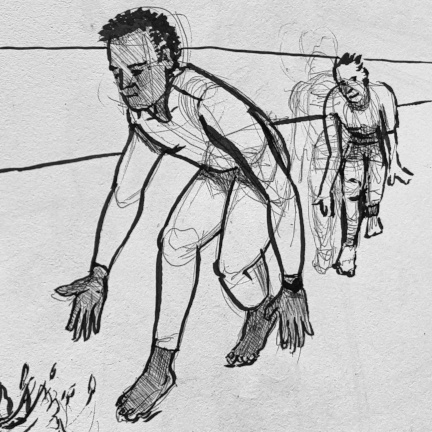
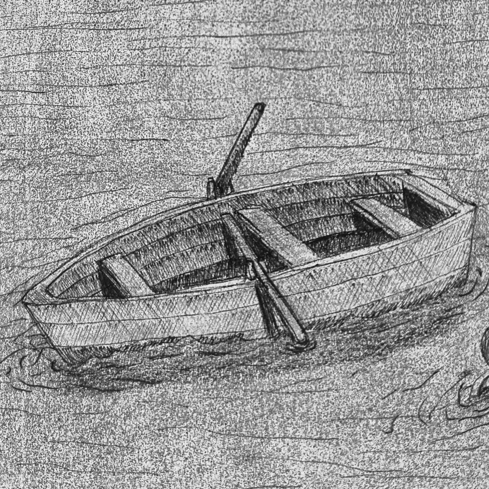
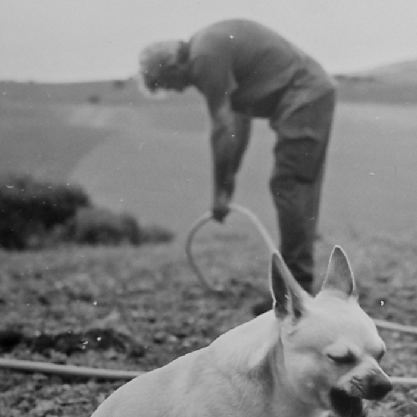
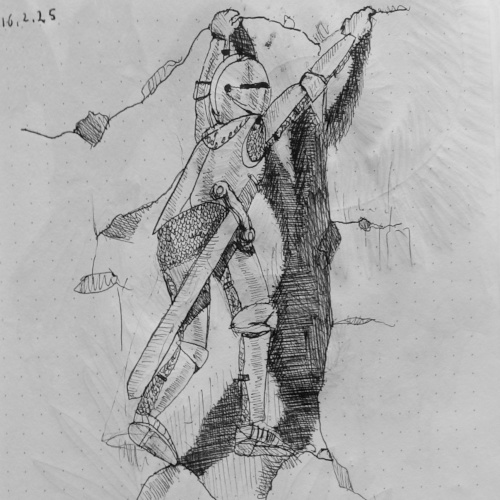
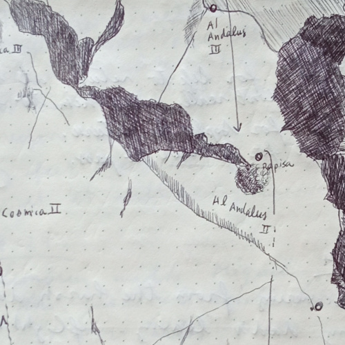
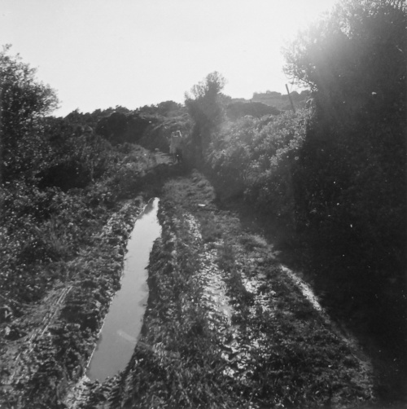
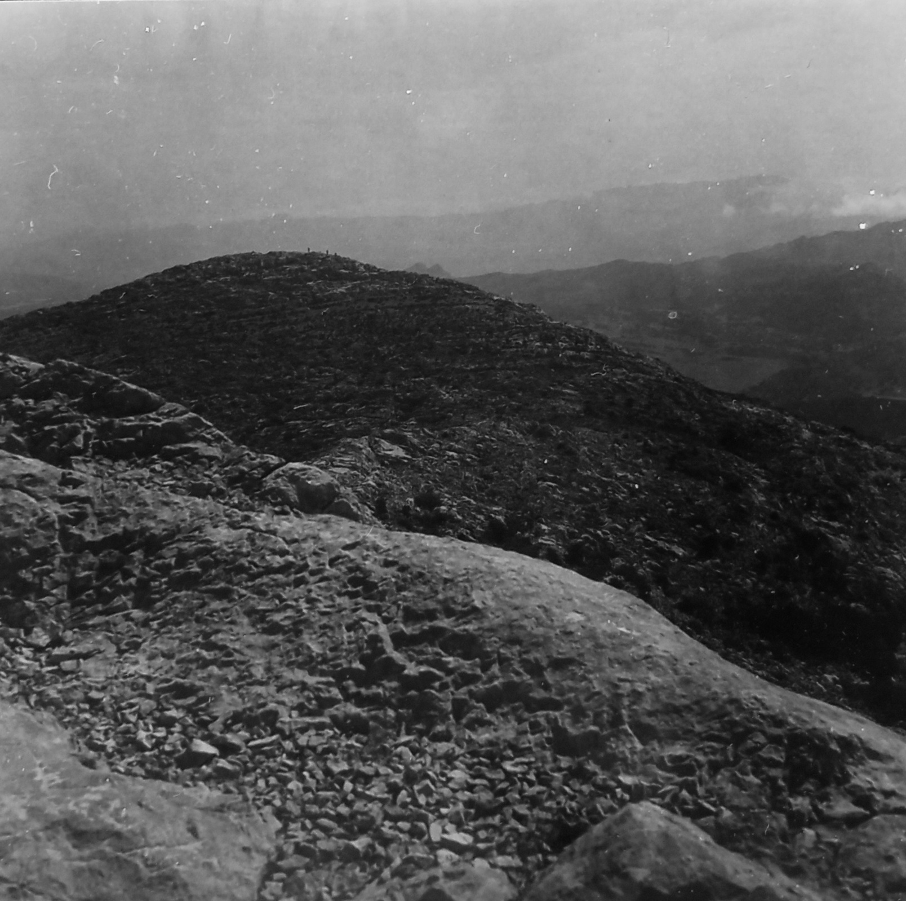

Fountain transformation
done with ballpoint (for now)
He used to call him Matsli'ah, not a common name, it was his family name and a rather strange one to be honest, in hebrew it means succesful. Never have I met another Matsli'ah before or after this one. In later years he called him by his first name: Itsik. I only ever saw him in a short period when I was around fi
Every once in a while we change the orientation of the living room table. It's a busy table; to move it on its axis by 90 degrees requires some tidying and sorting first. Some of the objects that are on the table might be totally out of place when reoriented. When I spot them I put them aside to avoid the breach.A lot
His name on the screen; the phone on silent mode. It occurs quite often when the phone is on silent: he calls, and I happen to look at the screen and see his name. Curiously, his profile picture is a computer-generated image of two beings embracing,

Sometimes I find that I give advice that I didn't know I had. It happened yesterday. My daughter said she is overwhelmed by the news, that she is reading too much, and that it affects her badly. I said that she should be critical about what she reads: What is real news: something that happened, and what is just some sensationalist piece of distraction: somet

Is this the point where a socialist turned into an anarchist? Did this just happen? I never gave it much thought really. I guess that I thought Anarchy is just utopian, like all its critics do, thinking it is probably not going to work, which is besides the point, as no other system has proven to work, certainly not the current one. I'll start at that moment, or the moment just before: I was run
I didn't think I'll end up speaking about myself. I wanted to speak out my mind, and to find connections between the things I do, but consciously or even deliberately speaking about myself has no value, unless it helps relating to others, or communicate to others something beneficial. uff... language, a tool and a barrier.
Click on the images for related posts

done with ballpoint (for now)
and tipping

Ink is here to stay

Farming images
Pinhole images

rare fleeting ink characters

Rocks and memory

Water overground

A photography journey up the Sierra.
This hill is air